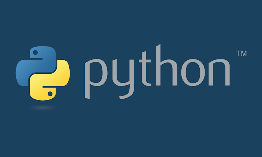

Desarrollo de aplicaciones web para impulsar tu negocio
Deseas convertir tu negocio en digital y no sabes como?
No te preocupes... Nosotros te ayudamos. codigo limpio, puro, y eficaz.
Lenguaje de etiquetas moderno y hojas de estilo sofisticado

Cada dia inovando las paginas en php para asegurar su eficacia
Aplicaciones basadas en lenguaje java

Lo ultimo en inovacion y moderno, el lenguaje python es tu mejor opcion
Necesitas agregar una base de datos a tu pagina web?
Base de datos mysql
MySQL sistema de gestión de bases de datos relacional más extendido basada en código abierto.

Base de datos sqlserver
Microsoft SQL Server sistema de gestión de bases de datos relacional, usado en inteligencia empresarial y análisis en entornos informáticos corporativos

Base de datos maria db
MariaDB es un sistema de gestión de bases de datos que está muy relacionado con MySQL. El sistema de gestión de bases de datos MariaDB incorpora las distintas funciones características de MySQL añadiendo algunas mejoras, como la posibilidad de ejecutar consultas complejas y almacenarlas directamente en caché

Base de datos postgresql
PostgreSQL, o simplemente Postgres para darle un nombre más pintoresco, es un sistema de código abierto de administración de bases de datos del tipo relacional, aunque también es posible ejecutar consultas que sean no relaciones. En este sistema, las consultas relacionales se basan en SQL, mientras que las no relacionales hacen uso de JSON
Base de datos mongodb lo ultimo en que las empresas estan migrando por su tecnologia e inovacion
MongoDB es una base de datos de documentos que ofrece una gran escalabilidad y flexibilidad, y un modelo de consultas e indexación avanzado.